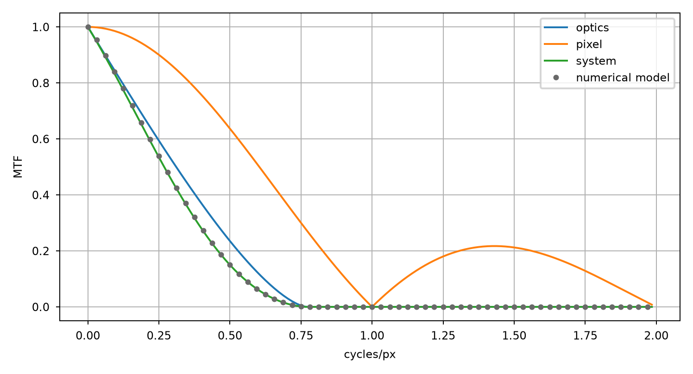

Pixel MTF#
The following code snippet compares the results of a numerical simulation using Lentil with the analytic result for the same imaging system:
import numpy as np
import matplotlib.pyplot as plt
import lentil
import matplotlib as mpl
mpl.rcParams['figure.figsize'] = (6, 3)
# Define some system parameters
diameter = 1
focal_length = 10
f_number = focal_length/diameter
du = 5e-6
wave = 650e-9
cutoff_freq = 1/(f_number*wave) # cycles/m
cutoff_freq_mm = cutoff_freq/1e3 # cycles/mm
# Define some simulation parameters
npix = 256
oversample = 4
psf_sampling = du/oversample
psf_sampling_mm = psf_sampling * 1e3
# Set up the spatial frequencies we'll evaluate the MTF at
# Note that we would like to at least cover the cutoff frequency here
mtf_axis_mm = 1/psf_sampling_mm * np.arange(0,npix//2) / npix # cycles/mm
assert mtf_axis_mm[-1] >= cutoff_freq_mm
mtf_axis_px = mtf_axis_mm * du/1e-3 # cycles/px
# Compute the analytical optical MTF
s = (mtf_axis_px*wave*f_number)/du
s_valid = s[s<1]
mtf_valid = 2/np.pi*(np.arccos(s_valid)-s_valid*np.sqrt(1-s_valid**2))
mtf_optics = np.zeros_like(s)
mtf_optics[0:s_valid.shape[0]] = mtf_valid
# Compute the analytical pixel MTF
f_px = mtf_axis_px
f_px[0] = 1e-15 # We have to cheat a little to avoid a divide by zero
mtf_px = np.abs(np.sin(np.pi*f_px)/(np.pi*f_px))
# The system MTF is just the product of the optical and pixel MTFs
mtf_sys = mtf_optics * mtf_px
# Now we'll build a simple Lentil model
npix_pup_rad = npix/2
npix_pup_diam = npix_pup_rad * 2
dx = diameter/npix_pup_diam
amp = lentil.circle((npix, npix), npix_pup_rad)
alpha = (dx*du)/(wave*focal_length*oversample)
psf = np.abs(lentil.fourier.dft2(amp, alpha, shape=npix)**2)
psf = psf/np.max(psf)
# Compute the optical MTF from a Lentil-generated PSF
mtf_optics_lentil = np.abs(np.fft.fft2(psf))
mtf_optics_lentil = mtf_optics_lentil/np.max(mtf_optics_lentil)
mtf_optics_lentil = mtf_optics_lentil[0,0:mtf_optics_lentil.shape[0]//2]
# Now apply Lentil's pixel model and compute the system MTF
psf_px = lentil.detector.pixel(psf, oversample=oversample)
mtf_sys_lentil = np.abs(np.fft.fft2(psf_px))
mtf_sys_lentil = mtf_sys_lentil/np.max(mtf_sys_lentil)
mtf_sys_lentil = mtf_sys_lentil[0,0:mtf_sys_lentil.shape[0]//2]
plt.plot(mtf_axis_px, mtf_optics, label='optics')
plt.plot(mtf_axis_px, mtf_px, label='pixel')
plt.plot(mtf_axis_px, mtf_sys, label='system')
plt.plot(mtf_axis_px[0::2], mtf_sys_lentil[0::2],
'o', color='dimgray', label='numerical model')
plt.xlabel('cycles/px')
plt.ylabel('MTF')
plt.legend()
plt.grid()
